Fragmented Enterprise Data Landscape
Business-critical data was distributed across LMS OData streams, Oracle ERP databases, and manually maintained Excel files.
Designed and implemented a scalable Microsoft Fabric platform that unified LMS OData, Oracle ERP, and shared-file data within a governed Lakehouse, automated incremental processing, and enabled high-performance enterprise reporting.
The organization lacked a centralized enterprise data layer, while high-volume and unstable source systems limited reporting performance, reliability, and historical analysis.
Business-critical data was distributed across LMS OData streams, Oracle ERP databases, and manually maintained Excel files.
Standalone BI tools struggled with high-volume OData feeds, creating system lag and restricting historical analysis.
Manual and semi-automated consolidation created reporting gaps, human-error risk, and inconsistent corporate metrics.
Oracle and local file extraction depended on gateway availability, causing pipelines to stall or fail when systems were offline.
Direct queries against unstable operational systems prevented scalable and responsive executive dashboards.
A modern Microsoft Fabric data platform was implemented to centralize integration, automate ETL, improve data quality, and provide a trusted analytics foundation.
Built Enterprise_Lakehouse with Delta tables to consolidate LMS OData, Oracle ERP, and shared-file data.
Implemented Bronze, Silver, and Gold layers for raw ingestion, validation, cleansing, and analytics-ready models.
Used Dataflow Gen2 and Power Query Advanced Editor to process only new and modified records.
Developed NB_Incremental_Merge in PySpark to upsert staged records and prevent duplicate keys.
Designed PL_Enterprise_Data_Integration with controlled dependencies and Wait activities to tolerate temporary gateway outages.
Built a Power BI semantic layer with advanced DAX, including TREATAS(), over optimized Gold Layer tables.
Automated Fabric pipelines, incremental refresh, and orchestration eliminated unnecessary full historical reloads.
LMS OData, Oracle ERP, and Excel data were automatically integrated and transformed in the centralized Lakehouse.
Incremental loading and Delta MERGE operations replaced complete dataset processing during every refresh.
The Lakehouse architecture overcame Power BI limitations associated with large OData datasets.
Centralized and validated enterprise data improved reporting accuracy and eliminated discrepancies from disconnected systems.
Delta Lake UPSERT logic retained the latest validated business records and prevented duplicate keys.
The Bronze–Silver–Gold framework accelerated future analytics initiatives and reduced development effort.
Business users gained current enterprise data with minimal operational intervention.
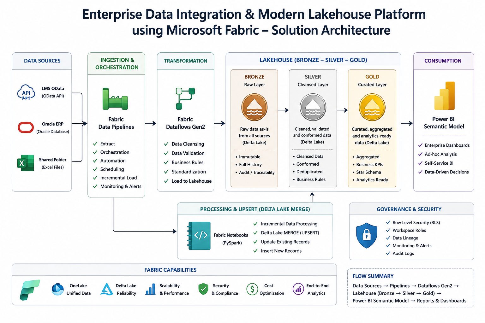
LMS OData, Oracle ERP, and shared files flow through Fabric Dataflows Gen2 into the Enterprise_Lakehouse Bronze, Silver, and Gold layers before consumption through the Power BI semantic model.
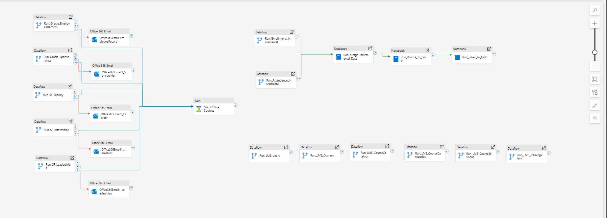
The pipeline combines resilient on-premises extraction, rolling 30-day incremental staging, PySpark MERGE notebooks, and parallel dimension-table processing for a reliable daily refresh.
Replace this placeholder with the public Power BI embed URL after publishing the report.
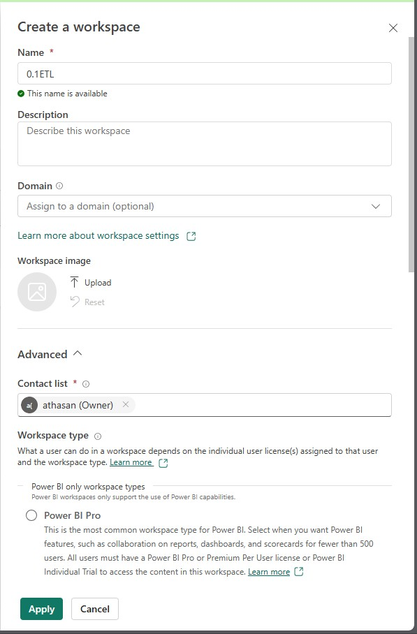
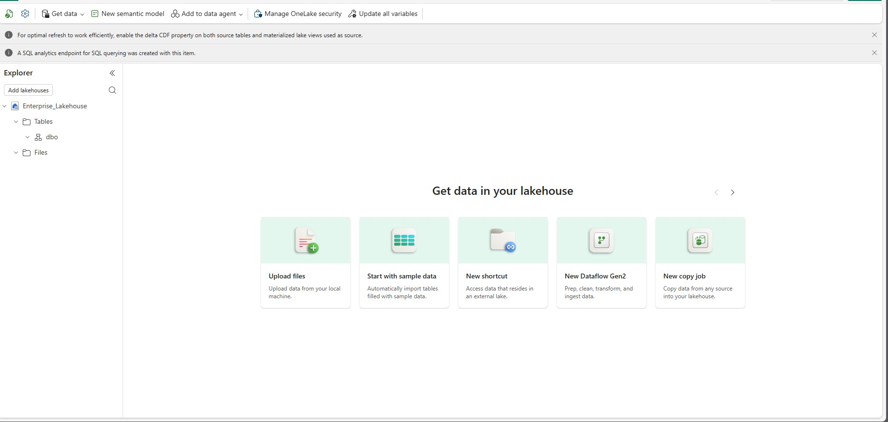
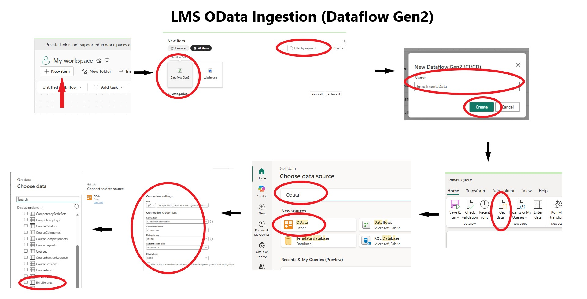
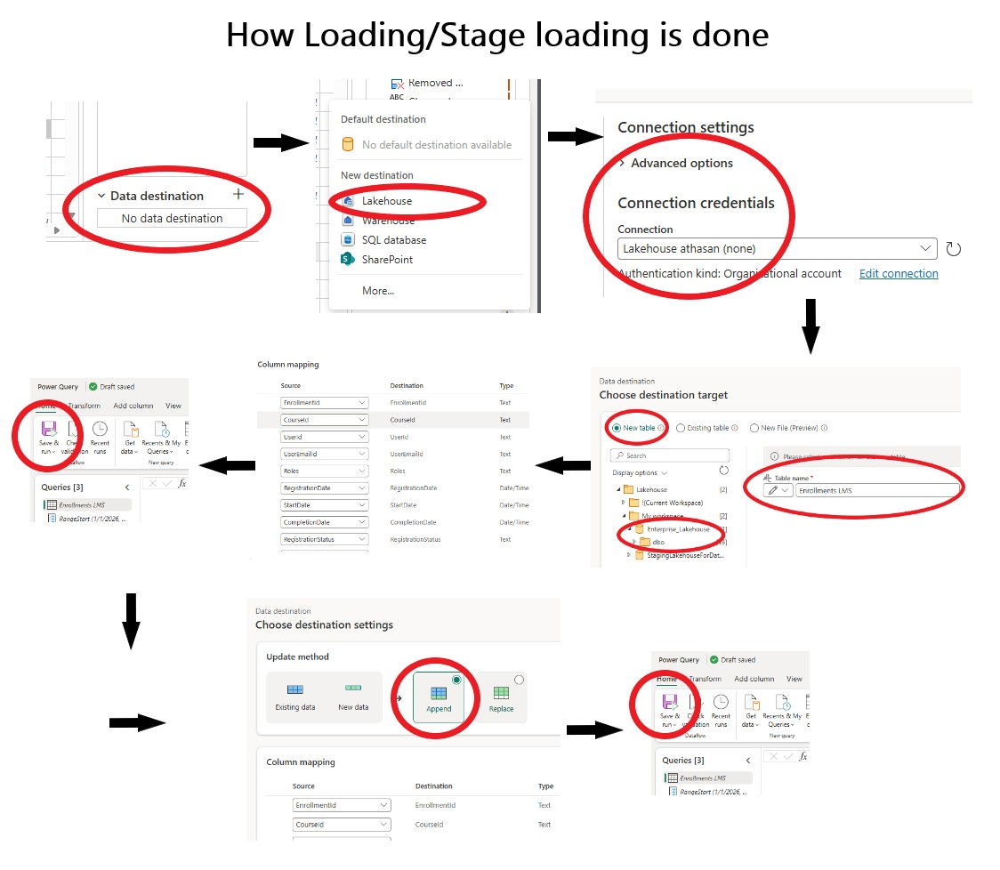
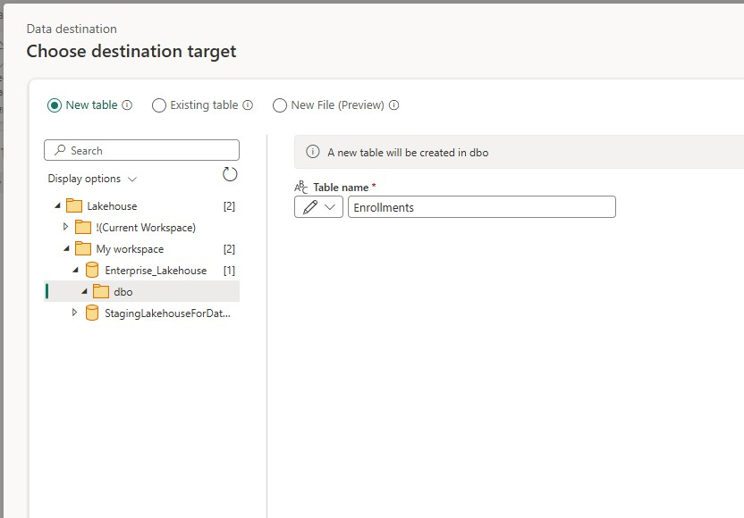
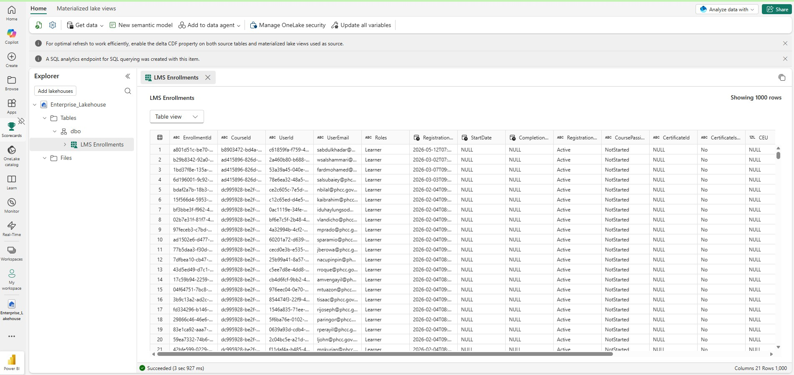
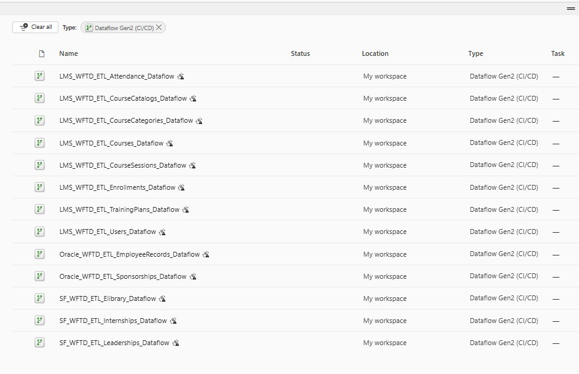
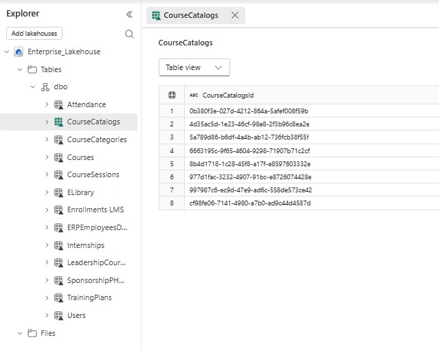
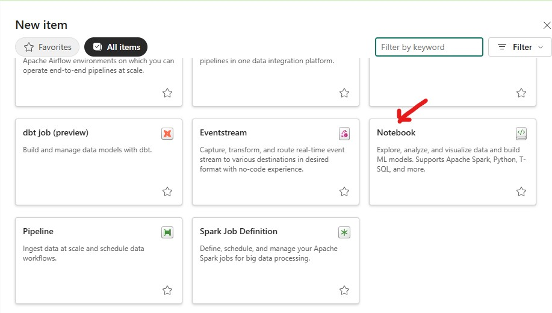
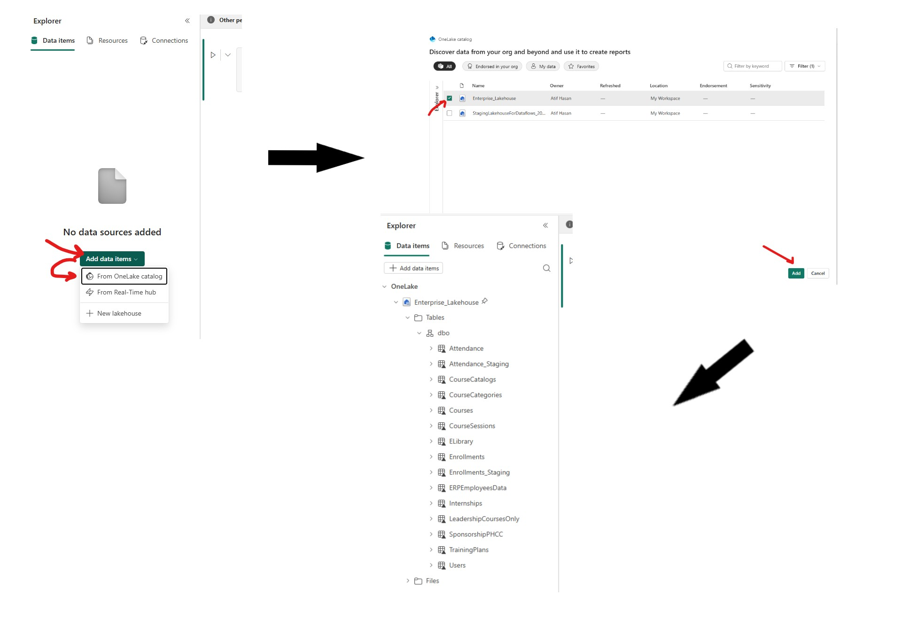
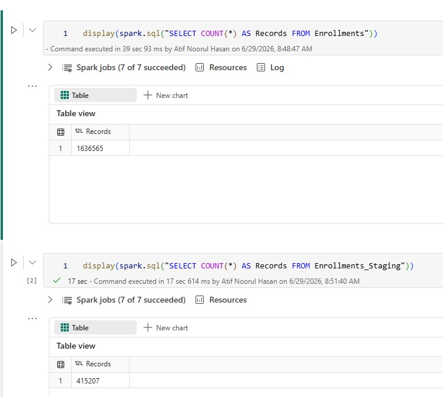
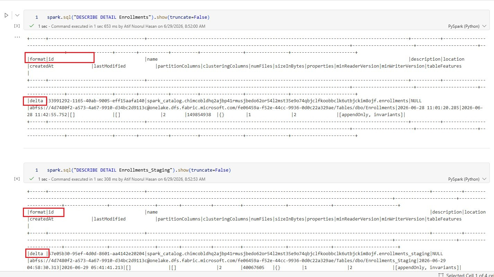
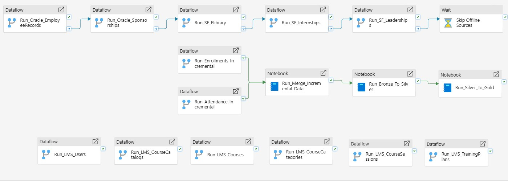

The repository contains architecture, pipeline documentation, code samples, and detailed project implementation notes.
Discover more enterprise data transformation and analytics projects.